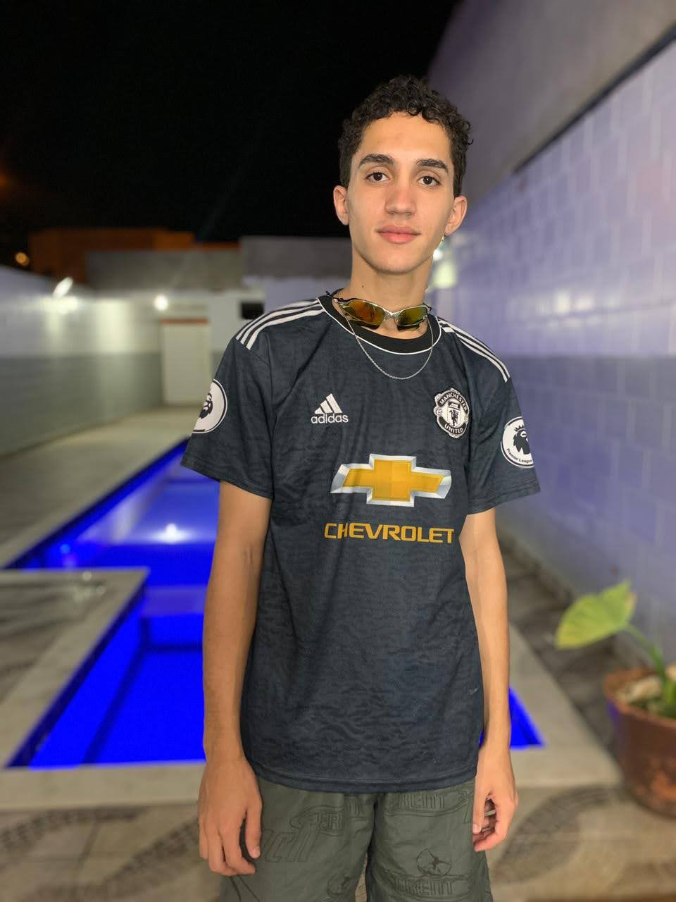
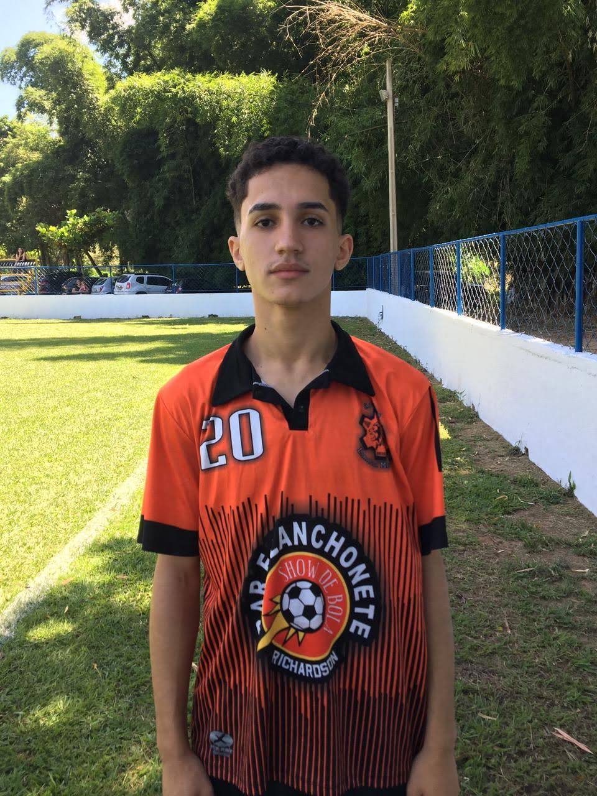

Igor Nolacio
vulgo IgãoSeja muito bem-vindo à pagina do membro Igão, um dos membros iniciais e principais do grupo Canarinho Pistola, fundador oficial desse grupo e membro mais 'doente' desse grupo.
 Igão é responsável por ser a diversão do grupo, apesar de ter sido o responsável por passar em primeiro no vestibular, e passar a imagem de nerd, igor não tem nada de nerd, sua característica é o bom papo e promover a diversão no grupo.
Além disso, também tem uma caracteristica muito forte de realizar todos os esportes disponível no planeta, futebol, basquete, handleball, judo, sua caracteristica também é a velocidade, e um estilo de jogo igual ao do jogador Léo Natel do corinthians
"Fazer parte dos Canários é do Car&!#@, esse grupo é muito empolgante, todos os dias são de 'doença' forte, dia ruim não tem aqui; Esse grupo é alegre, doentil e divertido"
- Igor Nolacio dos Santos
- Salto
- Relacionamento Sério
- Centro-Avante
- Administrative assistant
Perguntado sobre uma palavra que define o grupo, Igor disse: "Maravilhoso 🤩" - o motivo é que não existe lugar mais maravilhoso do que estar com esse grupo, a 'doença', desse grupo é fantástica, uma coisa de outro mundo.